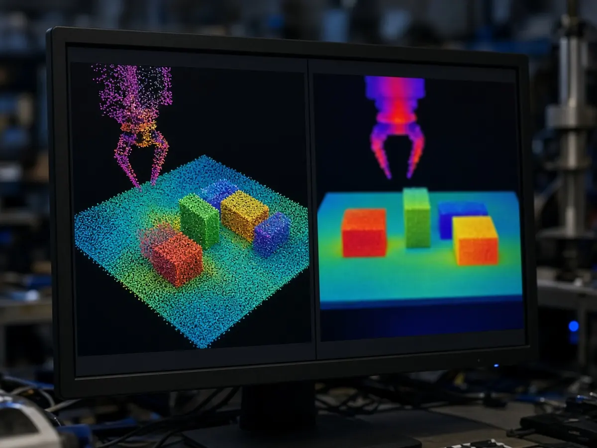

Research
X-Era releases E0.5, an open robot model that predicts the 3D scene ahead, tested on a Zerith H1 humanoid
Short answer: X-Era AI has published E0.5, a world-action model that uses a 3D vision model as its backbone and learns to predict how the scene will look in 3D at the end of each chunk of robot motion, according to the team's technical report, submitted to arXiv on 26 October 2026. Code is on GitHub and a RoboTwin checkpoint is on Hugging Face; RoboSignal covered the release on 29 October.

Most world-action models start from a video generator or a vision-language model, the authors write. E0.5 instead starts from VGGT-Omega, a model built to reconstruct depth, 3D points and camera poses, and trains it end to end to predict the future depth, point maps and camera parameters alongside the robot's actions. According to the project page, the future-geometry output is used only as a training signal and is removed when the robot is deployed.
In the RoboTwin 2.0 simulation benchmark, the team reports 89.90% success in clean scenes and 50.09% in randomised scenes across 50 tasks, with a 2.32-billion-parameter policy and no robot-data pretraining. Predicting future geometry rather than only reconstructing the current scene added about 7.9 percentage points of average success in its tests, the report says.
The team then pretrained E0.5 on more than 160,000 trajectories from the AgiBotWorld-Beta dataset and tested it on an AgileX Piper dual-arm system and the Zerith H1 humanoid on three tabletop jobs: placing a mouse on a pad, packing a charger and its cable into a basket, and putting rubbish in a bin. According to the project page, mean real-world success on the H1 rose from 81.7% to 88.3% with that pretraining, and from 70.0% to 85.0% on the Piper. Each setting used 10 trials per task, the report says.
The GitHub page says the release includes training and inference code and RoboTwin evaluation tools, and the Hugging Face model card describes the posted checkpoint as an intermediate one rather than the final model. For related research, see our coverage of Alibaba Amap's λ0 model, Machenta's one-demonstration learning and our research hub.
Sources
- E0.5: From Reconstructive to Future-Predictive 3D Foundations for Robotic World-Action Modeling (arXiv 2610.36011, submitted 26 Oct 2026)
- E0.5 project page (X-Era.AI)
- X-EraAI/e05 code repository (GitHub)
- X-EraAI/e05-robotwin model card (Hugging Face)
- X-Era AI releases open-source native 4D world action model E0.5 (RoboSignal, 29 Oct 2026)